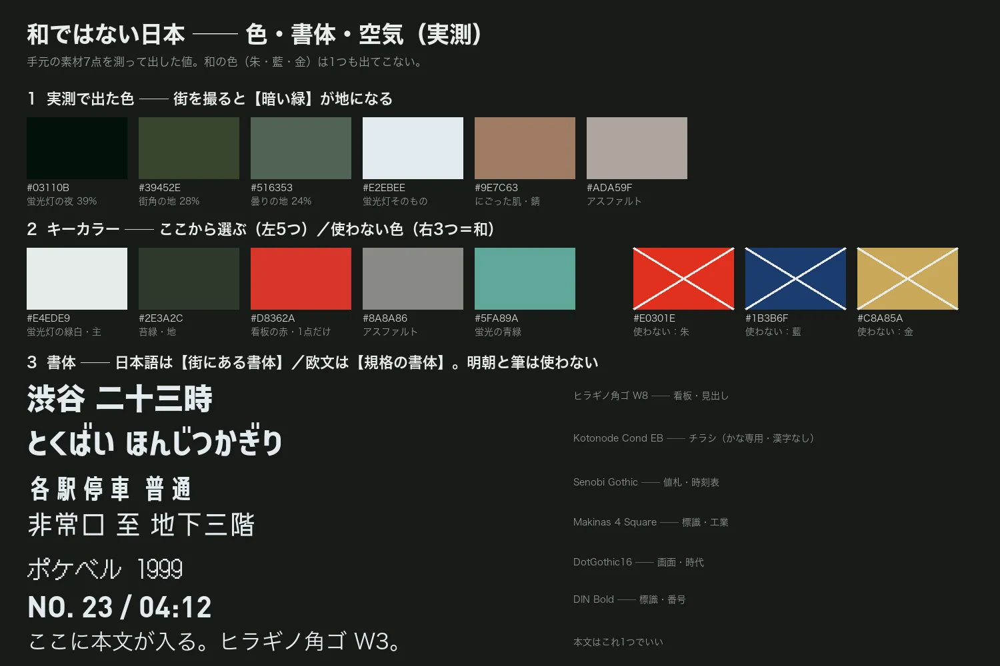
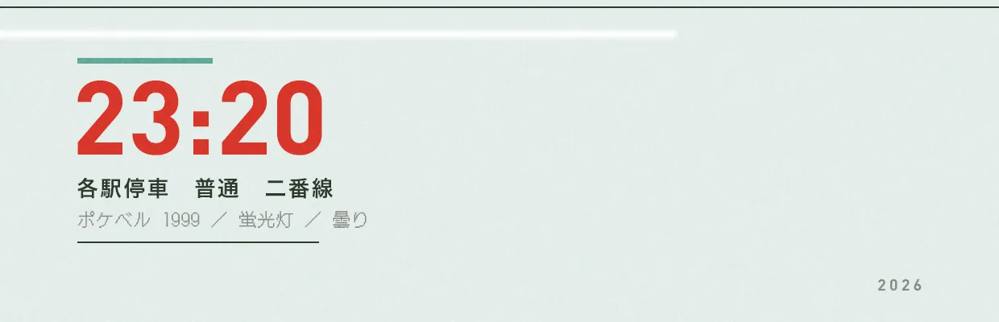

自分が作りたいものを説明しようとすると、いつも言葉が足りなかった。昔のストリートスナップや、羊文学のような日本のカルチャー。日本がはっきり出ているのに、和ではない。これを言葉と数字にしておけば、色や書体を選ぶときの決まりになる。そう考えて、色・書体・空気を測った。

和は記号で書ける。日本は条件でしか書けない
和は、外に向けて差し出すために選ばれた記号の集まりだと思う。朱、藍、墨、金、筆、紋、余白。選んだ人がいて、一目で伝わるように作られている。
私が撮りたいのは、選ばれずに残った方だ。誰も「これが日本だ」とは思っていないのに、日本でしか成り立たない状態。言葉にできなかったのは、記号を探していたからだった。こちら側には記号が無く、条件しか無い。
| 和 | 和ではない日本 | |
|---|---|---|
| 定義のしかた | 記号（朱・筆・紋・富士・余白） | 条件（光・密度・湿り・姿勢） |
| 選んだ人 | いる | 誰も選んでいない |
| 向き | 外へ差し出す | ただそこにある |
| 見た人の反応 | 「日本だ」と分かる | そうとは言えないが、他の国ではない |
| 引き算 | している（余白） | していない（電線・標識・室外機） |
だから和の記号を1つも使わずに日本を出す。朱を1回置いた時点で、和に寄ってしまう。
日本を成り立たせている5つの条件
- 借り物が、生活に沈んでいる。欧文の看板、洋服、洋楽の形式。輸入したことを誰も覚えていない。羊文学はシューゲイズという借り物の形式で日本語を歌い、それでも日本にしか聞こえない。
- 光が上から均等に来る。蛍光灯と曇り。影ができず、全部が同じ平面に並ぶ。
- 密度が高く、整理されていない。電線、標識、室外機、自販機、のぼり、張り紙。版面でも要素を減らさず、端まで置いて、切れてもいい。
- 曇りが基準。明度50〜56、彩度20前後の平らな光。夕焼けを入れると「エモい写真」になって日本が薄まる。
- 人が構えていない。歩いている途中で止められた顔。撮られ慣れていない人の、半端な立ち姿。
色：街を撮ると暗い緑が地になる
手元の素材7点を、色のまとまりごとに数えた。平均にすると色が混ざって消えるので、まとまりで見る。
| 素材 | 彩度（中央） | 明度（中央） | 多い色相 |
|---|---|---|---|
| 蛍光灯の屋内 | 47.6 | 28.6 | 緑31% ／ 青緑30% ／ 赤22% |
| 街角 | 27.2 | 54.7 | 黄緑46% ／ 赤22% ／ 橙13% |
| 曇りの屋外 | 21.6 | 56.1 | 緑37% ／ 赤26% ／ 青緑15% |
| （対照）整ったスタジオ写真 | 23.7 | 73.3 | 赤91% ／ 緑0% |
街を撮ると、緑から青緑が3〜6割出る。スタジオで撮ると赤しか出ない。緑の出どころは、蛍光灯、樹、苔、コンクリート、自販機だった。
朱 #E0301E、藍 #1B3B6F、金 #C8A85A は、7点のどれにも出てこなかった。「和ではない」と感じていたことが、数字でも出た。
キーカラー5つと、使わない3つ
看板の赤と朱の差が、そのまま和と日本の差になる。朱は塗られた色で、艶があり彩度が高い。看板の赤は印刷されて褪せた色。迷ったら褪せた方を選ぶ。
書体：日本語は街にある書体、欧文は規格の書体
明朝と筆は使わない。そこから和が入ってくる。例外は新聞や週刊誌の見出しの明朝くらい。
| 役 | 書体 | どこにある字か |
|---|---|---|
| 見出し（日本語） | ヒラギノ角ゴシック W7〜W9 | 看板・駅・役所 |
| チラシの見出し | Kotonode Condensed ExtraBold | 特売・のぼり（かな専用） |
| 値札・時刻表 | Senobi Gothic | 縦長のゴシック |
| 標識・工業 | Makinas 4 Square | 角が平ら |
| 画面・時代 | DotGothic16 ／ PixelMplus | 90年代〜00年代の画面・ポケベル |
| 数字・欧文 | DIN Bold ／ Frutiger | 道路標識・空港 |
| 本文 | ヒラギノ角ゴシック W3 | これ1つで足りる |
日本語と欧文を混ぜて組む。欧文だけだと外国のポスターになり、日本語だけだと和に寄る。混ざっている状態が日本に見える。
空気：曇りの街の値に寄せる3手
曇りの街の実測値（彩度21.6、明度の中央56.1）に、整ったスタジオ写真を寄せてみた。Photoshop で3手だけかけている。
| 手 | 値 | Photoshop |
|---|---|---|
| 1 中間調を落とす | ガンマ 0.60 | レベル補正の中央。黒は持ち上げない |
| 2 中間調を緑青へ | R −10 / G +9 / B +5 | カラーバランス（中間調） |
| 3 彩度を落とす | ×0.85 | 色相・彩度 −15 |
結果は、彩度23.7が25.0に、明度の中央73.3が57.3になった。目標とのずれは +3.4 と +1.2。
いちばん大事なのは、四隅を暗く落とさないこと。それまで組んできた26本のポスターの型は、全部四隅を落としていた。映画ポスターの作法だ。蛍光灯と曇りは上から均等に光が来るので、影ができない。この方向では落とさない。
この値だけで1枚組んだ
上の値以外は使わずに、ポスターを1枚組んだ（1240×1600px）。地は #E4EDE9、暗い色は #2E3A2C、赤 #D8362A は1点、青緑 #5FA89A は線1本。書体はヒラギノW8、DIN Bold、DotGothic16、ヒラギノW3・W6。空気の3手は全部調整レイヤーにして、あとから回せるようにした。

| 明るさ | |
|---|---|
| 中央 | 100.6 |
| 四隅 | 232.8 |
| 差 | +132.2（四隅の方が明るい） |
四隅を落とすと、四隅は中央より暗くなる。ここでは逆に出ているので、落としていないことが数字で確かめられた。
1回目は外した。写真を版面いっぱいに置いたら、地の緑白が1画素も見えなくなった。測った色が出ない。そこで地の列を左に残し、その列を文字で埋めた。余白を取らないことと、地を見せないことは別の話だった。
読んできた雑誌が、そのまま条件になっていた
よく読んでいた雑誌を並べると、5つの条件がもう誌面の形で存在していた。
- STUDIO VOICE 欧米のカルチャーを日本語の誌面に落とし込んでいた（条件1）。
- STREET ／ FRUiTS ／ TUNE 人が構えていない。ストロボで影を潰し、背景を整理しない（条件5・2・3）。
- POPEYE ／ BRUTUS アメリカを日本語で読み替えて、日本のものにした（条件1）。
- L magazine（エルマガジン） 関西の月刊誌。音楽、映画、美術、店を同じ面に並べる（条件3）。
どれも雑誌で、ポスターではない。ポスターは1枚に絞り、雑誌は大中小の文字と写真を同じ面に詰める。次に組むのは、ポスターより誌面の形かもしれない。